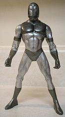
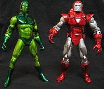

|
The Guardsman armor was always one of my favorites from the Iron Man storyline. For this custom I used a DC Direct Green Lantern figure, sculpted the helmet, repositioned both arms and shortened the legs a little. The paint application was done by using two shades of silver, then overcoating with two shades of translucent green paint (Tamiya brand for all paints). I'm excited about the way the paint turned out.
Here is a shot of the figure before adding the translucent green paint. Click for a larger image
Here is side by side pic with Silver Centurion Iron Man, whose candy apple red paint application I was attempting to emulate. Click for a larger image.
|